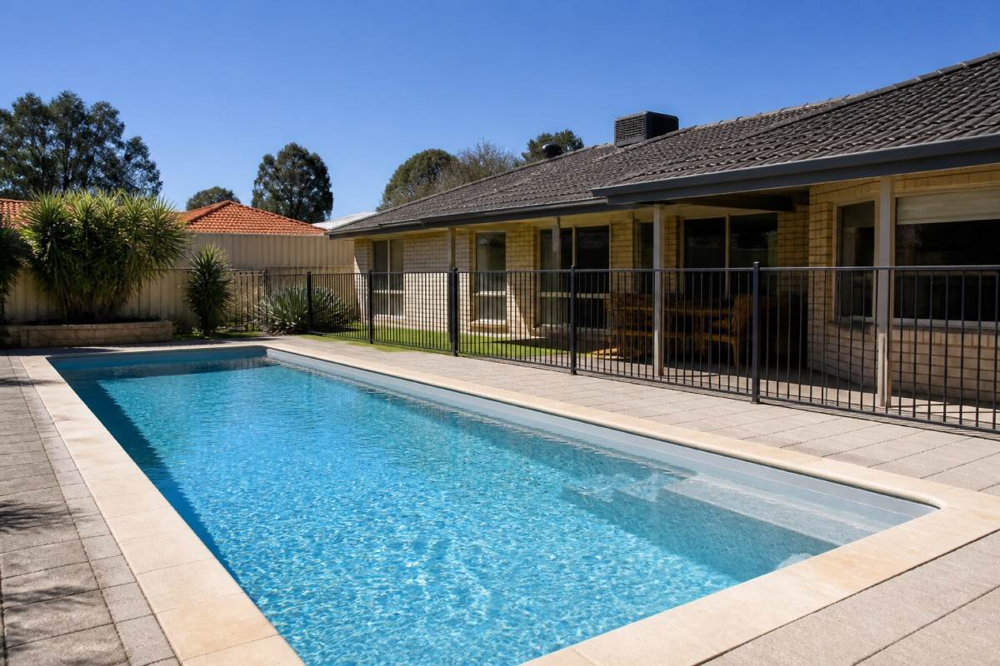
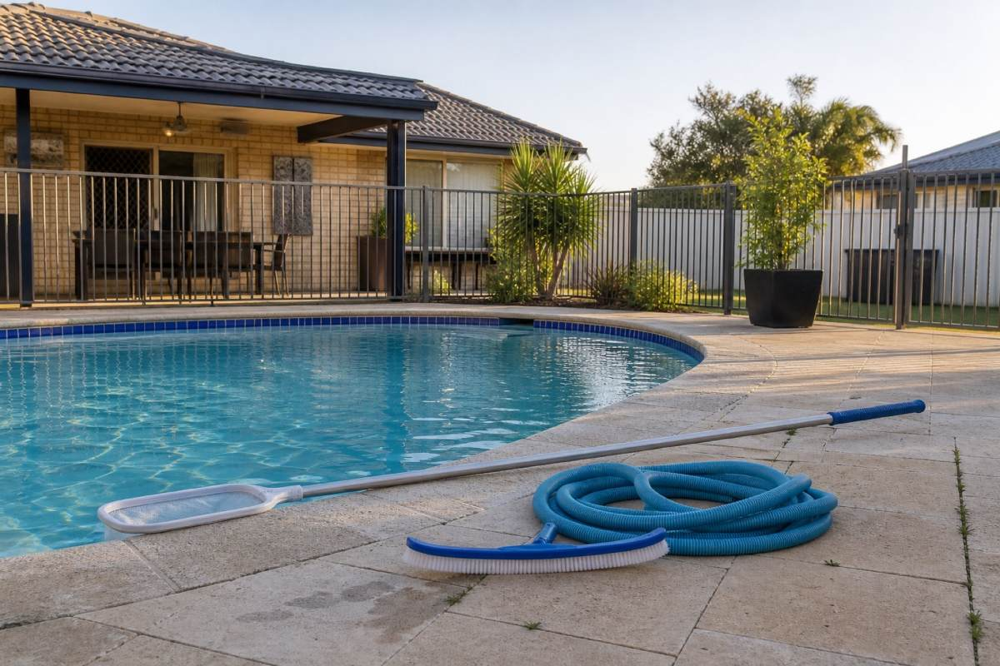

Perth metro · since 2018
Pool cleaning, repairs and renovations across Perth
Clear water, equipment that works, and repairs done properly the first time.
Call Daniel — your go-to for pools 0437 283 972 · Cleaning, equipment, renovations and water testing.What we do
Six ways we keep your pool right
We find the actual problem, fix it the right way, and keep your pool healthy long-term.
Scheduled pool servicing
Routine cleaning, skimming, vacuuming, brushing, baskets and full water balancing.
Green pool recovery
Algae treatment, filtration correction, sediment removal and chemical rebalancing.
Water testing & balancing
pH, chlorine and alkalinity checked against HealthyWA guidance, to protect swimmers and equipment.
Equipment repairs
Pumps, filters, chlorinators, cleaners and circulation — we find the fault and tell you the right fix.
One-off pool cleans
Storm cleanups, property handovers, after heavy use, or a pool that's been left too long.
Pool renovations
Surface restoration, fibreglass renovation, equipment upgrades and full system assessments.


Photographs shown are representative Perth pool settings, not photographs of completed Sunnyside work.
Renovations
Bring an old pool back
Ageing surfaces, dated equipment, cracks and stains — where a pool can be restored rather than replaced, we'll tell you. That covers resurfacing, fibreglass renovation, equipment upgrades and complete system assessments.
Every renovation starts with an inspection, so you know exactly what's needed before anything begins.
What an inspection covers
Daniel comes out, looks at the pool, and tells you what it actually needs.
- Surface and shell condition
- Equipment age and performance
- What's worth restoring, what isn't
How it works
Three steps, in this order
A direct process, so you always know what's happening and why.
-
STEP 01
Inspect
We look at the water, the equipment, the surfaces and the access — and ask what you actually want out of the pool.
-
STEP 02
Diagnose
We work out whether it's chemical, mechanical, filtration, structural, or just maintenance that's overdue.
-
STEP 03
Resolve
We fix it, then tell you plainly what we did and what to keep an eye on.
Ready to get your pool sorted?
Call Dan and quiz him on cleaning, renovations, equipment or water testing — he'll tell you what it actually needs.
Call Daniel — your go-to for pools0437 283 972 · Eight years of pool cleaning, equipment and renovation work across Perth.